部分最小二乗（Partial Least Squares）
Partial-Least-Squares
サマリー
非常に共線状な要因が多くあるとき、部分最小二乗法（Partial least squares, PLS）は、予測モデルを構築するための方法です。
このチュートルでは、サンプル中に存在する3つの化合物の量を決定するために、サンプルのスペクトルのデータを使用します。データには、
- 異なる波長での発光スペクトル強度のデータ（V1 - V43）
- 試料中の3つの化合物の量（COMP1、COMP2、COMP3）
v1 - v43から3つの化合物の量を予測するモデルを確立します。
必要なOriginのバージョン: Origin 2016 SR0以降
PLS回帰
- 新しいプロジェクトの新しいワークブックで開始します。\Samples\Statistics\MixtureSpectra.datファイルをインポートします。
- 列("v1")から("v43")までを選択します。
- メニューから統計：多変量解析：部分最小二乗法と選択します。開いたplsダイアログの入力データのタブを開きます。
- 選択した列が自動的に独立変数として追加されます。独立変数の隣にある三角形のボタン
 をクリックし、コンテキストメニュー内にある列の選択を選びます。
をクリックし、コンテキストメニュー内にある列の選択を選びます。
- 列ブラウザダイアログの右下にある矢印ボタンをクリックして下部パネルを表示します。
- 下部パネルで ... ボタンをクリックします。範囲ダイアログが開くので、全列のチェックを外し、データ範囲を1から20に変更してOKをクリックします。さらにOKをクリックし、列ブラウザを閉じます。
- 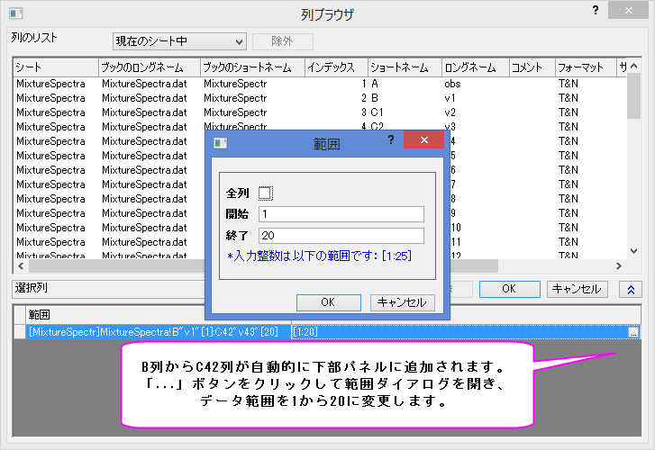
- 従属編集の右側にある参照ボタン
 をクリックします。ワークシートに戻り列("comp1")を選択して列("comp3")へドラッグします。再度ボタンをクリックしてダイアログボックスを開きます。
をクリックします。ワークシートに戻り列("comp1")を選択して列("comp3")へドラッグします。再度ボタンをクリックしてダイアログボックスを開きます。
- 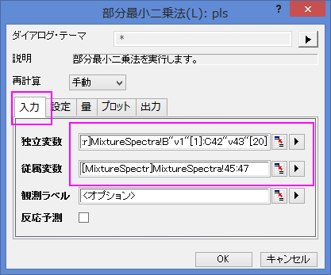
- v1から143までは吸光度なので、それら標準化する必要はありません。設定タブをクリックし、方法をSVDにして、スケール変数のチェックを外します。
- 交差確認にチェックを付けます。これにより、モデルの要因の最適な数を見つけやすくなります。
- 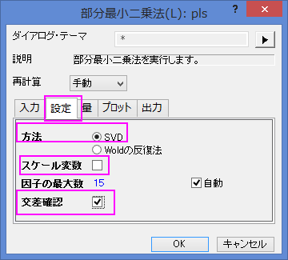
- プロットの項目を開き、さらに、成分プロットの項目を開きます。以下のチェックボックスにチェックを付け、OKボタンをクリックします。
- 変数重要度プロット
- Xのローディングプロット
- Yのローディングプロット
- Xの得点プロット
- Yの得点プロット
- 診断グラフ
- 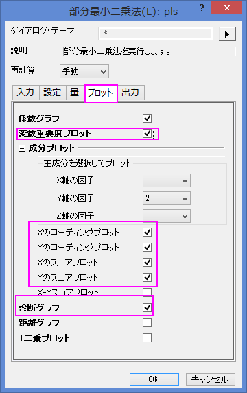
モデルの開発
ワークブックの、PLS1シートを開きます。
- 交差確認の表は、抽出のための最適な因子数を示しています。PRESS
はモデルの予測した残差の二乗和です。PRESSの最小ルート平均のモデルが、最適な因子数を持ちます。
- 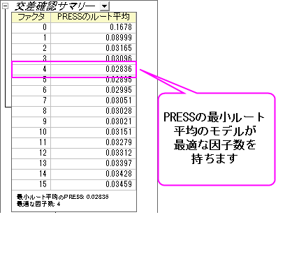
- 診断グラフは、YとXの残差プロットで、モデルの質を判断するのに使用されます。全体的に、フィットされたモデルが良好であると言うことができます。なぜなら、
- レイヤ1 - 予測値と実際の値のグラフは、モデルが最初のコンポーネントとフィットしていることを示しています。
- レイヤ2 - 予測値と残差グラフでは、残差はゼロの周りにランダムに分布しています。これは、プロセスにはドリフトが存在しないことを意味します。
- レイヤ4 - 残差のP-P図は、分散が正規分布しているかどうか確認するために使用できます。結果はほぼ直線なので、分散は正規分布していることを意味します。
- 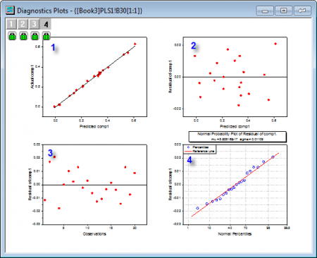
- v1からv43の重要度のサマリーはVIPグラフで与えられます。変数が小さな回帰係数と低いVIP値をもつ場合、モデルでそれを除外することを検討できます。例えば
- 以下のグラフでは、v41～v43のVIP値は小さい
- 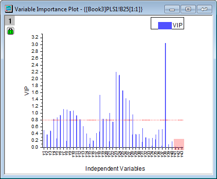
- 以下の3つの係数グラフでは、v41～v43の係数は小さい
- 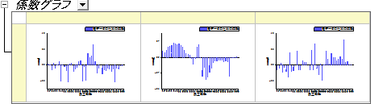
- しかし、ステップ2のように、このモデルは良くフィットしているので、これらの重要度の低い変数はそのままにしても良いことがわかります。
結果の解釈
- Variance Explainedテーブルは、各要因によって説明される分散の割合を示します。このサンプルでは、ファクター1はX効果の分散71.36％とY効果の分散75.6％を説明します。このサンプルでは、ファクター2はX効果の分散23.99%とY効果の分散22.14%を説明します。因子寄与プロットから、これら2つのX効果とY効果が95％以上になることから、最初の2つの因子にはより多くの注意を払うべきであることがわかります。
- 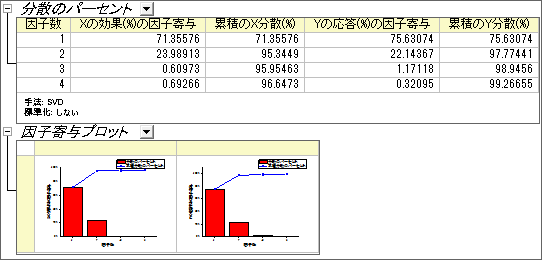
- ローディングプロットは、最初の2つの因子の空間での、変数XとY間の関係を明らかにします。
- Yローディングプロットから、3つの化合物は、因子1と因子2上で異なる負荷を持っていることを確認できます。
- 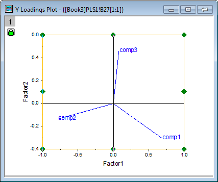
- Xローディングプロットからは、v26 ~ v38 は因子2に似たような高い負荷をもち、v17、v18、v19、v23、v24は因子1と2に同様軽い負荷を持つことがわかります。
- 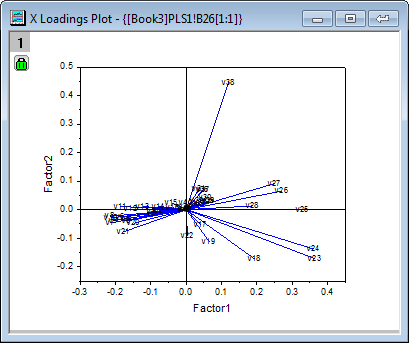
| Note：詳細にプロットの情報を確認するには、ローディングプロットを含むグラフをダブルクリックしてウィンドウとして開き、スケールインツールを使用して拡大できます。
|
モデルを使用して予測する
モデルが確立されると、異なる波長でのそれらの新しい発光スペクトル強度のサンプルに対して、3つの化合物の量を予測することができます。
- PLS1シートにある錠前マークをクリックし、パラメータを変更をコンテキストメニューから選びます。
- 開いたダイアログで、入力データの項目にある、反応予測にチェックを付けます。
- 予測のための独立変数の右側にある参照ボタン をクリックします。ワークブックに戻り、MixtureSpectraシートを開きます。列("v1")から列("v43")までを選択します。再度ボタンをクリックしてダイアログボックスを開きます。
- 予測のための独立変数の隣にある、三角形のボタンをクリックし、コンテキストメニュー内にある列の選択を選びます。
- 列ブラウザダイアログの下部パネルで ... ボタンをクリックします。全列のチェックを外し、データ範囲を21から25に変更します。OKをクリックして、範囲ダイアログと列ブラウザダイアログを閉じます。
- 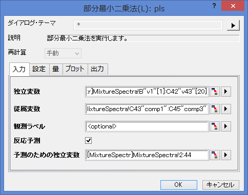
- OKボタンをクリックして設定を適用し、ダイアログを閉じます。
- PLSResults1に、新しい5つのサンプルに対する3化合物の予測量が入力されています。
- 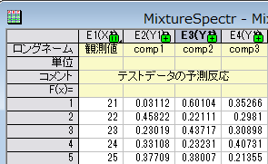